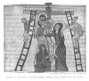

The Kebra Nagast, by E.A.W. Budge, [1922], at sacred-texts.com
105. CONCERNING THE BELIEF OF ABRAHAM
And thou dost not understand that they were justified by faith—Abraham, and David and all the Prophets, one after the other, who prophesied concerning the coming of the Son of God. And Abraham said, "Wilt Thou in my days, O Lord, cast Thy word upon the ground?" And God said unto him, "By no means. His time hath not yet come, but I will shew thee a similitude of His coming. Get thee over the Jordan, and dip thyself in the water as thou goest over, and arrive at the city of Sâlêm, where thou shalt meet Melchizedek, and I will command him to show thee the sign and similitude of Him." And Abraham did this and he found Melchizedek, and he gave him the mystery of the bread and wine, 2 that same which is celebrated in our Passover for our salvation through our Lord Jesus Christ. This was the desire and the joy of Abraham as he went round the altar which Melchizedek had made, carrying branch and palm on the day of the Sabbath. See how the rejoiced in his belief, and see how he was justified by his belief, O blind Jew, who though having eyes seest not, and having ears hearest not, even as the Prophet Isaiah saith concerning you, "Their eyes are blind, and their hearts are covered with darkness, so that they may not understand and God may not show compassion unto them." 3

Click to enlarge
Plate XVII. Joseph of Arimathea and Nicodemus taking Christ down from the Cross
{kind=link}
Footnotes
200:2 Compare Isaiah vi, 10; xliv, 18.
200:3 Genesis xiv, 18.